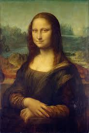

Mona Lisa
Best known for its ambiguous, faint smile and the way her gaze seems to follow the viewer. Often read as an early study of psychological depth — a portrait less about status and more about an unreadable inner life.